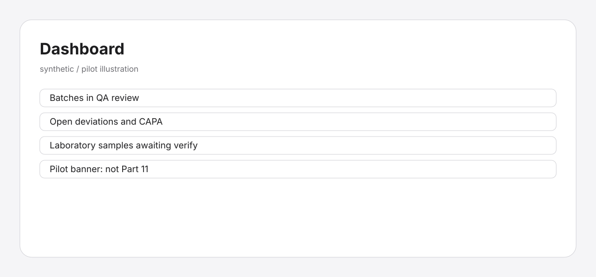
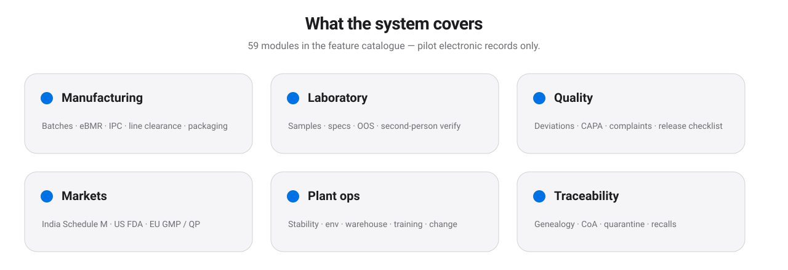
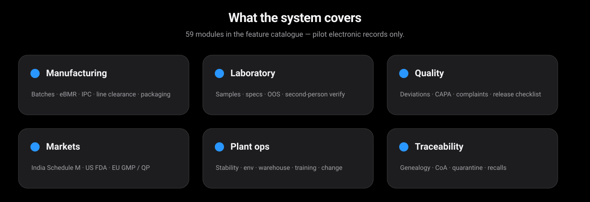
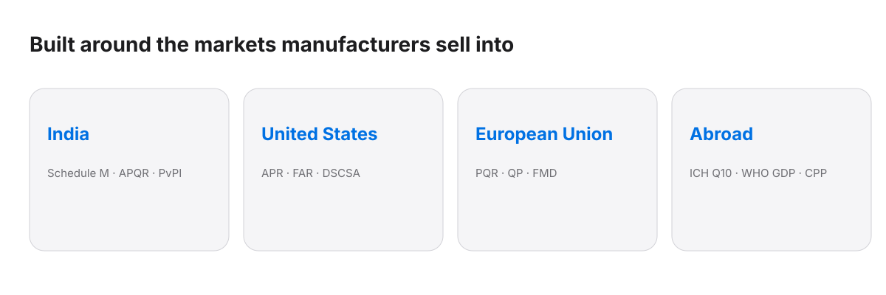
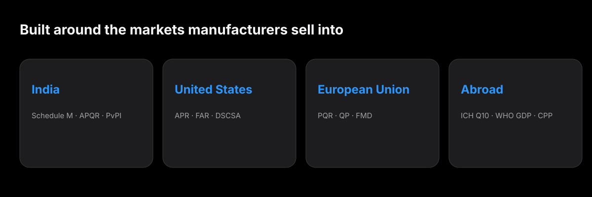
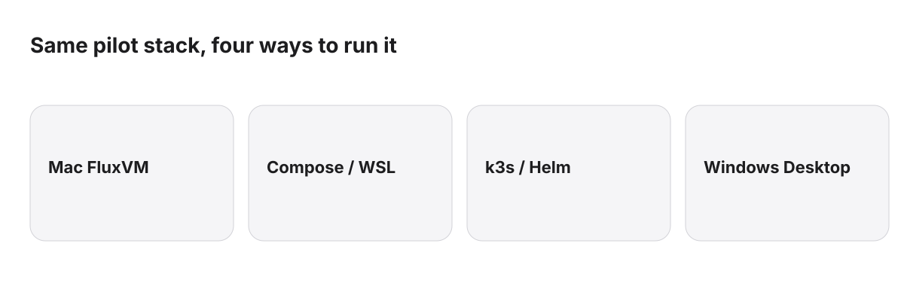
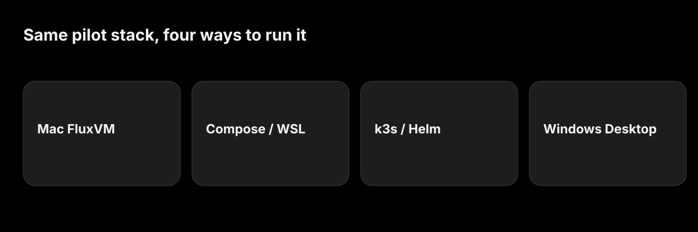

Zyvor AI Labs · Manufacturing quality
Batch to release for manufacturers.
One spine for manufacturing, laboratory and QA — with modules for India Schedule M, US FDA and EU GMP. Electronic records for pilot evaluation. Not validated. Not 21 CFR Part 11. Distinct from retail Zyvora Pharmacy.
- Pilot-ready
- Self-hosted
- 59 modules
- India / US / EU
- Synthetic / demo data
- Not validated
- Not Part 11


The panel above is an illustration of the product model with synthetic figures — not a certified screenshot and not a regulatory claim.
Counts come from the product's own /api/v1/features and /api/v1/markets/summary catalogue. Pilot electronic records only.
Built for the plant
One place for everyone who touches a batch.
Manufacturing
Batches, recipes, eBMR steps, IPC, line clearance, cleaning, packaging and retains — with genealogy to material lots.
Laboratory
Samples, results, specifications, automatic OOS on fail, and second-person verify before QA sees the pack.
Quality & markets
Deviations, CAPA, complaints, audits, risk, release checklist, CoA draft — plus APQR, PV, FAR, QP and serialization stubs for the markets you sell into.
See it
The release spine, illustrated.
Synthetic figures only. Illustrations of the data model — not product screenshots of a validated system.

Modules
Everything a release day needs.


Manufacturing & eBMR
Status transitions, material genealogy, eBMR step seeding, IPC, line clearance, cleaning, packaging and retain samples.
Laboratory & OOS
Samples and results against specs, second-person verify, and OOS investigations when a result fails.
Quality system
Deviations, CAPA, complaints, internal audits with findings, risk register, quarantine, recalls and CoA draft.
Stability & environment
Stability studies and pulls, environmental readings, temperature excursions and notifications.
Warehouse & supply
Locations, inventory moves, suppliers and SCAR-style actions, labels and packaging orders.
Governance
Document metadata, training logs, change control, equipment due dates, ALCOA+ checks and append-only audit export.
Markets
India. United States. European Union. Abroad.
Pilot records aligned to how manufacturers talk about Schedule M, FDA and EU GMP — without claiming validation.


Schedule M oriented
APQR, annual self-inspection, PvPI-channel AE, water-system readings, CDSCO-style licence register, pest and hygiene logs.
FDA oriented
Annual product review, Field Alert stubs, MedWatch-channel AE, DSCSA serialization events, Form 483-style inspection log, CSV inventory (honest: unvalidated).
EU GMP oriented
PQR, Annex 16 QP certification meaning statement, FMD serialization events, GDP cold-chain shipments.
ICH / WHO oriented
Tech transfer projects, export CPP drafts, reference standards (IP/USP/EP), hold-time studies, ALCOA+ checklists.
Security and records
Built so QA can see who did what.
Actor identity on every write, append-only audit events, role gates for QA and laboratory actions.
Append-only audit
Creates, transitions, verifies and approvals write audit events that can be listed and exported as CSV.
Role-aware actions
Manufacturing, lab, quality, readonly and admin actors — QA decisions and QP certification require quality (or admin).
Honest validation status
The product banners and API meta state that the system is not validated and not Part 11 / Annex 11 compliant.
Self-hosted
Postgres and the API on infrastructure you run — FluxVM on Mac, compose, k3s or Windows/WSL.
No independent penetration test yet. Read the honest limits Security in detail
Deploy
Run it your way.
Mac via FluxVM, Linux compose, k3s/Helm, or Windows Docker Desktop / WSL — same pilot stack.
Deployment in detail Ask about deployment

Honest limits
What Pharma QMS is not, yet.
We would rather you hear it from us.
| Area | Where it stands |
|---|---|
| Validation | Not a validated system. Not 21 CFR Part 11, EU GMP Annex 11, or WHO computerized-systems certified. |
| Data | Built and demonstrated with synthetic / pilot data. Do not use for regulated release decisions without your own validation. |
| Market gateways | No live CDSCO SUGAM, FDA ESG, EMVS or E2B exchange. Market modules are electronic-record stubs. |
| Retail pharmacy | This is not Zyvora Pharmacy (retail medical stores). Separate product, separate site. |
| Security review | No independent penetration test yet. Audit trail is append-only application logging, not a claim of tamper-proof storage. |
| Also not built yet | Customer-owned IQ/OQ/PQ packs, ERP/LIMS bidirectional connectors, full PSUR authoring, live serialization repositories. |
Resources
Take it to your team.
Printable one-pagers and the live pages. Same honest limits on every sheet.
Executive overview
What Pharma QMS covers and why plants evaluate it.
PDFPilot guide
Prove the fit in an afternoon with synthetic data.
PDFModule guide
Manufacturing, lab, quality, plant and market modules.
PDFMarkets matrix
India Schedule M · US FDA · EU GMP — electronic records only.
PDFSecurity & honest limits
Controls we built and what we have not claimed.
PDFArchitecture & deployment
Desktop, compose, FluxVM, k3s — yours to host.
PDFIT & security questions
The questions your IT team will ask, answered plainly.
PDFIntended use
What the pilot is for, and what it refuses to claim.
ReadFor evaluators
Ask sales for a private walkthrough. Product source is not published on this site.
Ask about a pilotPricing
Plans to be completed
Pricing has not been decided. Layout only — no figure here is an offer. Production use requires a Zyvor Production License.
Evaluation
Non-production evaluation under the Zyvor Production License.
- [ scope to be defined ]
Plant
For a single manufacturing site proving the fit.
- [ scope to be defined ]
Network
For several sites and custom integration.
- [ scope to be defined ]
To discuss a pilot: sales@zyvor.dev.
Customer stories
None yet. to be completed
Pharma QMS has not been deployed with a customer. When it is, their story goes here.
Questions
Straight answers.
Is Zyvor Pharma QMS a validated / Part 11 system?
No. It is pilot-ready software for evaluation with synthetic or non-regulated demonstration data. It makes no Part 11, Annex 11 or Schedule M compliance claim.
Is this the same as Zyvora Pharmacy?
No. Zyvora Pharmacy is retail medical-store software. Pharma QMS is for pharmaceutical manufacturers — batch, lab and QA release.
Can we use it for regulated batch release?
Not without your own validation programme. The product itself is not validated for regulated release decisions.
Does it cover India, US and EU?
Yes as pilot electronic-record modules (APQR/APR/PQR, PV, FAR, QP, serialization, GDP, licences, and more). It does not connect to live regulatory gateways.
Where does our data live?
On infrastructure you run: PostgreSQL behind the Go API. Compose, FluxVM, k3s or Windows/WSL.
Can I see the source?
The product source is private. This repository is the public website only — no application source. Ask sales what we can share with evaluators.
Ready for a pilot?
Tell us about your plant. We will walk you through it with synthetic data first.